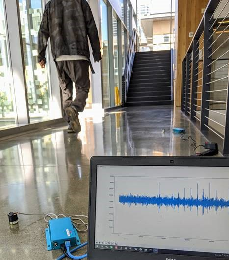

UC Merced professors collaborate on three CITRIS grants
to solve big
problems in the Valley
December 4, 2020
By Leigh Bernacchi, CITRIS UC Merced
The Center for Information Technology Research in the Interest of Society and the Banatao Institute focuses on research and innovation across four UC campuses. UC Merced faculty are involved in three new proposals to address society’s—and the San Joaquin Valley’s—problems through technology: agriculture, health, and access to STEM careers. The CITRIS Core Seed Fund awards are each $60,000 and will be used to catapult research into actionable results within a year. Of the 68 proposals, seven teams were awarded, including three with UC Merced researchers.
In April, the CITRIS Seed funds were distributed in the service of COVID 19
CITRIS UC Merced’s Director Joshua Viers said, “These seed funds often grow into the large proposals that make changes to society. I could not be happier that we’re leveraging UC Merced’s strengths in health and agriculture and serving underrepresented students through mentorship with these proposals and look forward to expanding this work.”
Professor Catherine Keske, UC Merced Director of the new National Science Foundation Engineering Research Center IoT4Ag (internet of things for agriculture) will assess the digital nature of modern agriculture. From precision applications to yield monitors, massive amounts of data are collected on farms. With Martin Kenney and Anne Visser from UC Davis and John Zysman from UC Berkeley, the team will review digital platforms for agricultural data by interviewing the developers and users and reviewing the literature.
A second award focuses on a key barrier to independent living for older adults: the risk of falling. Medical treatments for falls are painful, costly and lead to potentially more challenges for the patient and their families. 25% of older adults fall every year, and 20% of these falls result in serious injuries, but new technology research can catch some falls before they happen.
Two of the newest UC Merced faculty in computer science are teaming up with Healthy Aging Association’s Young-At-Heart balance training classes, including on zoom, to help prevent falls. Computer Science professors Wan Du and Shijia Pan are relying on the testbed of the workout and balance training classes to improve the lives of participants and older adults everywhere. Pan’s lab explores new ways to achieve accurate monitoring without hampering privacy and movements by making Internet of Things (IoT) sensing systems smarter. “Smart home applications enhance people’s quality of life” Pan said.
The data collected will provide personalized recommendations based on how high the older adult lifts their foot, the length of their step, the rhythm of their gait, strength, and other metrics. Using fine-scale information from wristbands and floor tiles instrumented with sensors they will interpret normal walking, and pre-fall walking. They plan to expand this work in non-controlled environments, using similar comfortable sensors. Complex math and communication among all sensors underlie the interpretations of data in near-real time, eventually alerting caretakers to increased risk of falls. With JoAnn Seibles of the Department of Family and Community Medicine at UC Davis, the team is using an interdisciplinary approach, bringing together computer science, social epidemiology and quantitative psychology. Pan also won best paper for her work at prestigious conferences, including work on the footstep-induced floor vibrations.
Finally, Networking is not just awkward introductions; it is a critical key to accessing careers and opportunities through near-peers. CITRIS awarded another proposal to improve student access to networks through a series of mentoring events and direct connections across Berkeley, Davis and Merced graduate and undergraduate students in Science, Technology, Engineering and Mathematics—the STEM fields.
Professor Erin Hestir leads CITRIS UC Merced’s Women in Technology programming, including the training program for STEM students to access tech careers called ¡Valle! With colleagues Sarah McCullough (UC Davis Feminist Research Institute) and Anita Balaraman (Fung Institute of Engineering Leadership and Haas School of Business at UC Berkeley), Hestir will study and facilitate inter-campus networking and provide training on what it takes to be a good mentor and mentee. Hestir reflected the personal motivation of the work: “I would not be where I am today if not for the mentors in my life. I want to afford our students the same opportunities.”
A UC Merced student’s walk yields vibrations on the floor sensors (Photo: Shijia Pan)